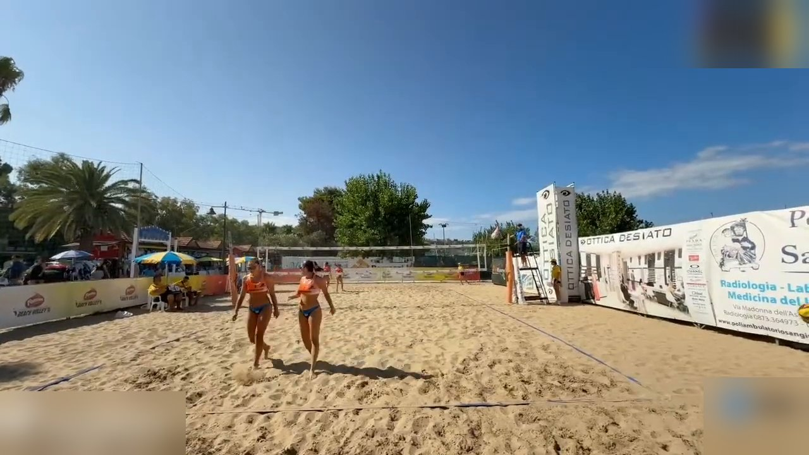
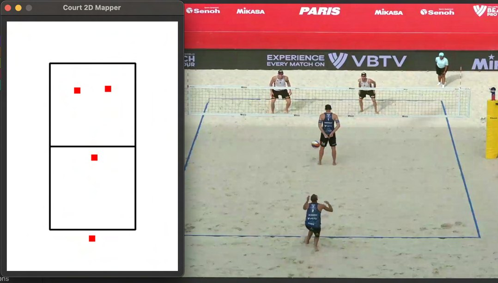

<!DOCTYPE html>
<html lang="it">
<head>
  <meta charset="UTF-8">
  <meta name="viewport" content="width=device-width, initial-scale=1.0">
  <title>Atto 4 — Il gioco ha le sue regole</title>
  <link rel="preconnect" href="https://fonts.googleapis.com">
  <link rel="preconnect" href="https://fonts.gstatic.com" crossorigin>
  <link href="https://fonts.googleapis.com/css2?family=Montserrat:wght@600;700;800;900&family=Inter:wght@400;500;600;700&display=swap" rel="stylesheet">
  <script src="https://unpkg.com/react@18.3.1/umd/react.production.min.js"></script>
  <script src="https://unpkg.com/react-dom@18.3.1/umd/react-dom.production.min.js"></script>
  <script src="https://unpkg.com/@babel/standalone@7.26.10/babel.min.js"></script>
  <script>Babel.registerPreset('classic', { presets: [[Babel.availablePresets.react, { runtime: 'classic' }]] });</script>
  <style>
    :root {
      --bg: #0e1728;
      --bg-card: #16233c;
      --bg-light: #1E2E52;
      --border: #2a3a5c;
      --text: #f3f5f9;
      --text-dim: #c9d2e0;
      --text-muted: #93a0b6;
      --coral: #EF5540;
      --sun: #F6A93B;
      --teal: #1FA9A0;
      --sand: #E7C58C;
      --navy: #1E2E52;
      --success: #1FA9A0;
      --danger: #EF5540;
      --warn: #F6A93B;
      --info: #4e93b8;
      --purple: #a879c4;
      --fs-xs: clamp(13px, 0.7vw + 11px, 14px);
      --fs-sm: clamp(15px, 0.8vw + 12px, 16px);
      --fs-body: clamp(17px, 1vw + 13px, 19px);
      --fs-lead: clamp(19px, 1.3vw + 14px, 22px);
      --fs-h3: clamp(20px, 1.6vw + 14px, 26px);
      --fs-h2: clamp(26px, 2.4vw + 16px, 36px);
      --fs-h1: clamp(34px, 5vw + 18px, 58px);
      --fs-display: clamp(44px, 7vw + 20px, 84px);
      --lh-body: 1.65;
      --lh-heading: 1.18;
    }
    * { margin: 0; padding: 0; box-sizing: border-box; }
    body { background: var(--bg); color: var(--text); font-family: 'Inter', sans-serif; }
    #root { min-height: 100vh; position: relative; }
    a { color: inherit; }
    h1 { font-family: 'Montserrat', sans-serif; line-height: var(--lh-heading); }
    h2, h3 { font-family: 'Montserrat', sans-serif; line-height: var(--lh-heading); font-weight: 700; }
    h2 { font-size: var(--fs-h2); }
    h3 { font-size: var(--fs-h3); }
    p, li { line-height: var(--lh-body); }
    button { font-family: 'Inter', sans-serif; }
    input[type="range"] { width: 100%; height: 32px; cursor: pointer; }
    .bg-texture {
      position: fixed; inset: 0; pointer-events: none; z-index: 0;
      opacity: 0.05;
      background-image: url("data:image/svg+xml,%3Csvg xmlns='http://www.w3.org/2000/svg' width='120' height='120'%3E%3Cfilter id='n'%3E%3CfeTurbulence type='fractalNoise' baseFrequency='0.9' numOctaves='2' stitchTiles='stitch'/%3E%3C/filter%3E%3Crect width='100%25' height='100%25' filter='url(%23n)'/%3E%3C/svg%3E");
    }
    .draw-surface { touch-action: none; }
    .app-shell { height: 100vh; height: 100dvh; display: flex; flex-direction: column; overflow: hidden; }
    .slide-scroll { -webkit-overflow-scrolling: touch; padding-bottom: 24px; }
    .slide-content-center { display: flex; flex-direction: column; justify-content: center; min-height: 100%; }
    @media (max-width: 768px) {
      .slide-content { padding: 16px !important; }
      .top-bar { padding: 0 10px !important; }
      .top-bar span { font-size: var(--fs-xs) !important; }
      .top-bar > div:first-child { gap: 8px !important; }
      .bottom-bar { gap: 8px !important; padding: 0 10px !important; }
      .bottom-bar button, .bottom-bar a { padding: 10px 14px !important; font-size: var(--fs-xs) !important; min-height: 44px; }
      svg { max-width: 100%; height: auto; }
      .domino-row { grid-template-columns: repeat(2, 1fr) !important; }
      .court-compare { grid-template-columns: 1fr !important; }
    }
    @media (max-width: 480px) {
      .top-bar > div:first-child span:nth-child(4) { display: none; }
    }
  </style>
</head>
<body>
  <div id="root"></div>
  <script type="text/babel" data-presets="classic">
    const { useState, useEffect, useRef, useCallback } = React;

    const colors = {
      bg: '#0e1728', bgCard: '#16233c', bgLight: '#1E2E52',
      accent: '#1FA9A0', accentAlt: '#6dc7c1', accentSolid: '#177f78',
      text: '#f3f5f9', textDim: '#c9d2e0', textMuted: '#93a0b6',
      border: '#2a3a5c',
      coral: '#EF5540', sun: '#F6A93B', teal: '#1FA9A0', sand: '#E7C58C', navy: '#1E2E52',
      success: '#1FA9A0', danger: '#EF5540', warn: '#F6A93B', info: '#4e93b8', purple: '#a879c4'
    };
    // accentSolid è il teal scurito di circa il 25%: bianco su accentSolid (#177f78) dà un
    // contrasto verificato ≈4.83:1 (WCAG AA), contro il ≈2.9:1 di un testo bianco direttamente
    // sul teal pieno (#1FA9A0), insufficiente. Vedi CLAUDE.md, sezione contrasto.

    const ACT_LABEL = 'Atto 4';
    const ACT_TITLE = 'Il gioco ha le sue regole';
    const PREV_ACT_HREF = 'atto3-quando-sembrava-funzionare.html';
    const NEXT_ACT_HREF = 'atto5-cambiare-punto-di-vista.html';

    // Citazione della tesi di partenza (fonte per le figure in assets/tesi/).
    const THESIS_CITATION = "Fonte: A. Zammarchi, BallVisionAI: un'applicazione di Visione Artificiale per l'analisi automatizzata di partite di Beach Volley, tesi di laurea magistrale, Università di Bologna – Campus di Cesena, A.A. 2023-24";

    // Flag globale: true mentre un simulatore sta "catturando" tastiera/puntatore,
    // per impedire alla navigazione slide (Spazio/Frecce) di interferire.
    let simActive = false;

    const Box = ({ type = 'info', title, children }) => {
      const cfg = {
        info: { c: colors.info, i: 'ℹ️' },
        warn: { c: colors.warn, i: '⚠️' },
        danger: { c: colors.danger, i: '🛑' },
        tip: { c: colors.purple, i: '💡' },
        success: { c: colors.success, i: '✓' }
      };
      const { c, i } = cfg[type];
      return (
        <div style={{ background: c + '15', border: `1px solid ${c}40`, borderLeft: `4px solid ${c}`, borderRadius: '0 4px 4px 0', padding: '16px 20px', margin: '16px 0' }}>
          {title && <div style={{ display: 'flex', alignItems: 'center', gap: '8px', marginBottom: '8px', fontWeight: '700', color: c, fontSize: 'var(--fs-body)', fontFamily: "'Montserrat', sans-serif" }}>{i} {title}</div>}
          <div style={{ color: colors.textDim, lineHeight: 'var(--lh-body)', fontSize: 'var(--fs-body)' }}>{children}</div>
        </div>
      );
    };

    const Glow = ({ children, color = colors.accent }) => (
      <div style={{ position: 'relative', padding: '2px', borderRadius: '12px', background: `linear-gradient(135deg, ${color}40, transparent, ${color}20)` }}>
        <div style={{ background: colors.bgCard, borderRadius: '10px', padding: '20px' }}>{children}</div>
      </div>
    );

    const SolidButton = ({ onClick, disabled, children, bg = colors.accentSolid, style }) => (
      <button
        onClick={onClick}
        disabled={disabled}
        style={{
          padding: '12px 26px', minHeight: '48px', border: 'none', borderRadius: '6px',
          background: disabled ? colors.bgLight : bg,
          color: disabled ? colors.textMuted : '#ffffff',
          fontWeight: '700', fontSize: 'var(--fs-sm)', cursor: disabled ? 'not-allowed' : 'pointer',
          fontFamily: "'Montserrat', sans-serif", letterSpacing: '0.02em',
          transition: 'transform 0.15s, filter 0.15s',
          ...style
        }}
        onMouseEnter={e => { if (!disabled) e.currentTarget.style.transform = 'translateY(-2px)'; }}
        onMouseLeave={e => { e.currentTarget.style.transform = 'translateY(0)'; }}
      >{children}</button>
    );

    const GhostButton = ({ onClick, disabled, active, children }) => (
      <button
        onClick={onClick}
        disabled={disabled}
        style={{
          padding: '10px 18px', minHeight: '44px', borderRadius: '6px',
          border: `1px solid ${active ? colors.accent : colors.border}`,
          background: active ? colors.accent + '25' : colors.bgLight,
          color: disabled ? colors.textMuted : (active ? colors.accentAlt : colors.textDim),
          fontWeight: '600', fontSize: 'var(--fs-sm)', cursor: disabled ? 'not-allowed' : 'pointer'
        }}
      >{children}</button>
    );

    /* ============================================================
       OMOGRAFIA — DLT (Direct Linear Transform) a 4 punti: 8 incognite
       (h11..h32, h33 fissato a 1), risolte con eliminazione di Gauss a
       pivot parziale su un sistema lineare 8x8. Usata dal simulatore
       "L'ombra della palla".
       ============================================================ */

    function solveHomography(src, dst) {
      const A = [], b = [];
      for (let i = 0; i < 4; i++) {
        const X = src[i].x, Y = src[i].y, u = dst[i].x, v = dst[i].y;
        A.push([X, Y, 1, 0, 0, 0, -X * u, -Y * u]); b.push(u);
        A.push([0, 0, 0, X, Y, 1, -X * v, -Y * v]); b.push(v);
      }
      const n = 8;
      for (let col = 0; col < n; col++) {
        let piv = col;
        for (let r = col + 1; r < n; r++) if (Math.abs(A[r][col]) > Math.abs(A[piv][col])) piv = r;
        [A[col], A[piv]] = [A[piv], A[col]];
        [b[col], b[piv]] = [b[piv], b[col]];
        const pv = A[col][col] || 1e-9;
        for (let r = 0; r < n; r++) {
          if (r === col) continue;
          const f = A[r][col] / pv;
          for (let c = col; c < n; c++) A[r][c] -= f * A[col][c];
          b[r] -= f * b[col];
        }
      }
      const h = b.map((v, i) => v / (A[i][i] || 1e-9));
      return [[h[0], h[1], h[2]], [h[3], h[4], h[5]], [h[6], h[7], 1]];
    }
    function applyHomography(H, x, y) {
      const w = H[2][0] * x + H[2][1] * y + H[2][2];
      return { x: (H[0][0] * x + H[0][1] * y + H[0][2]) / w, y: (H[1][0] * x + H[1][1] * y + H[1][2]) / w };
    }

    /* ============================================================
       DATI REALI — assets/data/court.json (fotogramma reale con 4
       giocatori, campo di beach volley 8 m × 16 m). Mai un fetch da
       file:// (CORS): copiati come costanti.
       ============================================================ */

    const FRAME_W = 1280, FRAME_H = 720; // court.json → risoluzione del fotogramma di riferimento

    // court.json → corners_norm: 4 angoli del campo, normalizzati sul fotogramma.
    // Ordine: ①vicino-sinistra (x negativo: esce dall'inquadratura) ②vicino-destra
    // ③lontano-destra ④lontano-sinistra.
    const REAL_CORNERS_NORM = [
      [-0.0484, 0.9028], [0.8290, 0.8769], [0.5537, 0.6305], [0.3925, 0.6363]
    ];
    const REAL_CORNERS_PX = REAL_CORNERS_NORM.map(([x, y]) => ({ x: x * FRAME_W, y: y * FRAME_H }));
    const CORNER_HINTS = ['vicino a sinistra (fuori inquadratura)', 'vicino a destra', 'lontano a destra', 'lontano a sinistra'];
    // Rettangolo di destinazione: campo reale, 8 m di larghezza × 16 m di lunghezza,
    // stesso ordine dei 4 angoli sopra.
    const COURT_DEST_M = [{ x: 0, y: 16 }, { x: 8, y: 16 }, { x: 8, y: 0 }, { x: 0, y: 0 }];

    // court.json → players: box normalizzati [x1,y1,x2,y2] dei 4 giocatori sul fotogramma.
    const REAL_PLAYERS_NORM = [
      [0.3635, 0.5681, 0.4094, 0.8255],
      [0.288, 0.5574, 0.337, 0.8102],
      [0.4135, 0.5764, 0.4271, 0.6421],
      [0.3979, 0.5731, 0.4115, 0.6417]
    ];
    // court.json → players_court: stessi 4 giocatori, posizione a terra in metri (già
    // calcolata dal sistema tramite l'omografia sopra) sul campo 8×16.
    const REAL_PLAYERS_COURT = [
      [2.774, 14.78], [3.796, 15.187], [1.84, 2.315], [1.105, 2.552]
    ];

    /* ============================================================
       SIMULATORE 1 — "Dalla foto alla mappa" (dati e fotogramma reali)
       ============================================================ */

    const CLICK_ORDER = [1, 2, 3]; // i 3 angoli visibili nel fotogramma; il ④ esce dall'inquadratura

    function RealCourtSimulator() {
      const [clicked, setClicked] = useState([]);
      const done3 = clicked.length === 3;
      const nextIdx = CLICK_ORDER[clicked.length];

      const onClickCorner = (i) => {
        if (i !== nextIdx) return;
        setClicked(c => [...c, i]);
      };
      const reset = () => setClicked([]);

      const MAP_SCALE = 15, COURT_W_M = 8, COURT_L_M = 16;
      const p0 = REAL_CORNERS_PX[0];
      const edgeX = Math.max(6, p0.x);

      return (
        <div>
          <p style={{ color: colors.textDim, fontSize: 'var(--fs-body)', marginBottom: '10px' }}>
            {!done3
              ? <>Clicca il pallino che pulsa: è l'angolo <strong style={{ color: colors.text }}>{CORNER_HINTS[nextIdx]}</strong> del campo, sul fotogramma reale.</>
              : <>Il quarto angolo esce dall'inquadratura: il sistema lo ricava comunque, dagli altri tre e dalla forma nota del campo.</>}
          </p>
          <div className="court-map-row" style={{ display: 'flex', gap: '20px', alignItems: 'flex-start', flexWrap: 'wrap' }}>
            <div style={{ flex: '3 1 380px', minWidth: '280px' }}>
              <div style={{ position: 'relative', display: 'inline-block', lineHeight: 0, maxWidth: '100%' }}>
                
                <svg viewBox={`0 0 ${FRAME_W} ${FRAME_H}`} style={{ position: 'absolute', inset: 0, width: '100%', height: '100%' }}>
                  <defs>
                    <marker id="arrowOff4" markerWidth="8" markerHeight="8" refX="6" refY="4" orient="auto">
                      <path d="M0,0 L8,4 L0,8 Z" fill={colors.teal} />
                    </marker>
                  </defs>
                  {done3 && (
                    <polygon points={REAL_CORNERS_PX.map(p => `${p.x},${p.y}`).join(' ')} fill={colors.sun} fillOpacity="0.15" stroke={colors.sun} strokeWidth="3" />
                  )}
                  {[1, 2, 3].map(i => {
                    const p = REAL_CORNERS_PX[i];
                    const isDone = clicked.includes(i);
                    const isActive = i === nextIdx && !done3;
                    return (
                      <g key={i} style={{ cursor: isActive ? 'pointer' : 'default' }} onClick={() => onClickCorner(i)}>
                        <circle cx={p.x} cy={p.y} r="30" fill="transparent" />
                        <circle cx={p.x} cy={p.y} r={isActive ? 14 : 9} fill={isDone ? colors.teal : isActive ? colors.sun : colors.bgLight}
                          stroke={isActive ? colors.sun : colors.border} strokeWidth={isActive ? 3 : 1.5}>
                          {isActive && <animate attributeName="r" values="11;17;11" dur="1s" repeatCount="indefinite" />}
                        </circle>
                        {isDone && <text x={p.x} y={p.y + 4} textAnchor="middle" fontSize="12" fontWeight="700" fill={colors.bg}>✓</text>}
                      </g>
                    );
                  })}
                  {done3 && (
                    <g>
                      <line x1={edgeX + 60} y1={p0.y} x2={edgeX} y2={p0.y} stroke={colors.teal} strokeWidth="2" strokeDasharray="6 5" markerEnd="url(#arrowOff4)" />
                      <text x={edgeX + 64} y={p0.y + 5} fontSize="16" fill={colors.teal}>④ qui, fuori campo</text>
                    </g>
                  )}
                </svg>
              </div>
            </div>
            <div style={{ flex: '2 1 260px', minWidth: '220px', maxWidth: '380px', textAlign: 'center', margin: '0 auto' }}>
              <h3 style={{ color: colors.textDim, fontSize: 'var(--fs-sm)', marginBottom: '8px', fontWeight: '600' }}>Vista dall'alto ricostruita (campo 8 × 16 m)</h3>
              <svg viewBox={`0 0 ${COURT_W_M * MAP_SCALE} ${COURT_L_M * MAP_SCALE}`} style={{ width: '100%', display: 'block', margin: '0 auto', maxHeight: '52dvh', background: '#0b2f3a', borderRadius: '8px', border: `1px solid ${colors.border}`, opacity: done3 ? 1 : 0.45, transition: 'opacity 0.3s' }}>
                <rect x="1" y="1" width={COURT_W_M * MAP_SCALE - 2} height={COURT_L_M * MAP_SCALE - 2} fill="none" stroke={colors.sand} strokeWidth="2" />
                <line x1="0" y1={COURT_L_M * MAP_SCALE / 2} x2={COURT_W_M * MAP_SCALE} y2={COURT_L_M * MAP_SCALE / 2} stroke={colors.textDim} strokeWidth="2" />
                {REAL_PLAYERS_COURT.map((p, i) => (
                  <circle key={i} cx={p[0] * MAP_SCALE} cy={p[1] * MAP_SCALE} r="6" fill={i < 2 ? colors.teal : colors.coral} stroke={colors.bg} strokeWidth="1.2" />
                ))}
              </svg>
              {!done3 && (
                <p style={{ color: colors.textMuted, fontSize: 'var(--fs-xs)', marginTop: '6px' }}>Si completa clic dopo clic.</p>
              )}
            </div>
          </div>
          <div style={{ display: 'flex', justifyContent: 'center', marginTop: '14px' }}>
            <GhostButton onClick={reset}>Ricomincia</GhostButton>
          </div>
          {done3 && (
            <Box type="tip" title="Perché bastano 4 punti">
              Pochi secondi di aiuto umano, una volta sola: da quei punti il sistema ricava la trasformazione (<strong style={{ color: colors.text }}>omografia</strong>) dell'intero campo, angoli fuori inquadratura compresi.
            </Box>
          )}
        </div>
      );
    }

    /* ============================================================
       SIMULATORE 2 — "L'ombra della palla" (stessa geometria reale)
       ============================================================ */

    const SHADOW_H = solveHomography(REAL_CORNERS_PX, COURT_DEST_M);
    const BALL_GROUND_PX = { x: 552, y: 548 }; // un punto a terra, dentro il quadrilatero reale del campo
    const RISE_PER_METER = 60; // px di risalita nell'immagine per ogni metro di altezza reale
    const SHADOW_MAP_SCALE = 13, SHADOW_W_M = 8, SHADOW_L_M = 16;

    function ShadowSimulator() {
      const [height, setHeight] = useState(0);
      const trueMapped = applyHomography(SHADOW_H, BALL_GROUND_PX.x, BALL_GROUND_PX.y);
      const apparentImg = { x: BALL_GROUND_PX.x, y: BALL_GROUND_PX.y - height * RISE_PER_METER };
      const apparentMapped = applyHomography(SHADOW_H, apparentImg.x, apparentImg.y);
      const dist = Math.hypot(apparentMapped.x - trueMapped.x, apparentMapped.y - trueMapped.y);

      const W = SHADOW_W_M * SHADOW_MAP_SCALE, Hh = SHADOW_L_M * SHADOW_MAP_SCALE;
      const pad = 160;
      const trueXY = { x: trueMapped.x * SHADOW_MAP_SCALE, y: trueMapped.y * SHADOW_MAP_SCALE };
      const appXY = { x: apparentMapped.x * SHADOW_MAP_SCALE, y: apparentMapped.y * SHADOW_MAP_SCALE };
      const sev = dist < 1 ? colors.teal : dist < 4 ? colors.warn : colors.danger;

      return (
        <div>
          <div style={{ display: 'flex', gap: '20px', flexWrap: 'wrap', alignItems: 'flex-start' }}>
            <div style={{ flex: '1 1 200px' }}>
              <svg viewBox="0 0 200 220" style={{ width: '100%', maxHeight: '28dvh', background: colors.bgLight, borderRadius: '8px', border: `1px solid ${colors.border}` }}>
                <line x1="30" y1="190" x2="170" y2="190" stroke={colors.textMuted} strokeWidth="3" />
                {[0, 1, 2, 3].map(m => (
                  <g key={m}>
                    <line x1="30" y1={190 - m * 50} x2="170" y2={190 - m * 50} stroke={colors.border} strokeWidth="1" strokeDasharray="3 3" />
                    <text x="14" y={194 - m * 50} fontSize="11" fill={colors.textMuted}>{m}m</text>
                  </g>
                ))}
                <circle cx="100" cy="190" r="6" fill={colors.textMuted} opacity="0.5" />
                <circle cx="100" cy={190 - height * 50} r="10" fill={colors.sand} stroke={colors.bg} strokeWidth="1.5" />
              </svg>
              <p style={{ textAlign: 'center', color: colors.textMuted, fontSize: 'var(--fs-xs)', marginTop: '4px' }}>Altezza reale della palla</p>
            </div>
            <div style={{ flex: '1 1 240px' }}>
              <svg viewBox={`${-pad} ${-pad / 2} ${W + pad * 2} ${Hh + pad}`} style={{ width: '100%', maxHeight: '28dvh', background: '#0b2f3a', borderRadius: '8px', border: `1px solid ${colors.border}` }}>
                <rect x="1" y="1" width={W - 2} height={Hh - 2} fill="none" stroke={colors.sand} strokeWidth="2" />
                <line x1="0" y1={Hh / 2} x2={W} y2={Hh / 2} stroke={colors.textDim} strokeWidth="2" />
                <line x1={trueXY.x} y1={trueXY.y} x2={appXY.x} y2={appXY.y} stroke={sev} strokeWidth="2" strokeDasharray="5 4" />
                <circle cx={trueXY.x} cy={trueXY.y} r="7" fill={colors.sun} stroke={colors.bg} strokeWidth="1.5" />
                <circle cx={appXY.x} cy={appXY.y} r="7" fill={sev} stroke={colors.bg} strokeWidth="1.5" />
              </svg>
              <p style={{ textAlign: 'center', color: colors.textMuted, fontSize: 'var(--fs-xs)', marginTop: '4px' }}>
                <span style={{ color: colors.sun }}>●</span> posizione vera al suolo &nbsp; <span style={{ color: sev }}>●</span> dove il sistema "pensa" che sia
              </p>
            </div>
          </div>
          <input type="range" min="0" max="3" step="0.1" value={height} onChange={e => setHeight(parseFloat(e.target.value))} style={{ marginTop: '14px' }} />
          <p style={{ textAlign: 'center', fontFamily: "'Montserrat', sans-serif", fontWeight: '700', color: sev, fontSize: 'var(--fs-h3)' }}>
            {height.toFixed(1)} m di altezza → l'ombra è a {dist.toFixed(1)} m dal punto vero
          </p>
          <Box type="warn" title="Ogni formula ha ipotesi nascoste">
            La proiezione vale solo per ciò che sta <strong style={{ color: colors.text }}>sul pavimento</strong>. Una palla in aria, proiettata a terra come se fosse appoggiata, finisce lontanissima da dove si trova davvero.
          </Box>
        </div>
      );
    }

    /* ============================================================
       SLIDE 5 — "Chi è chi": ritaglio reale delle due compagne
       ============================================================ */

    // Finestra di ritaglio attorno a players[0] e players[1] di court.json (unione dei due
    // box + margine), stessa logica di "zoom_window" usata nel manifest per i fotogrammi
    // dei gesti: locale = (assoluto - finestra_origine) / finestra_dimensione.
    const TEAM_CROP_WINDOW = [0.24, 0.49, 0.22, 0.40]; // [x0, y0, w, h] normalizzati

    function remapBox(box, win) {
      const [x0, y0, w, h] = win;
      const [bx1, by1, bx2, by2] = box;
      return { left: (bx1 - x0) / w, top: (by1 - y0) / h, width: (bx2 - bx1) / w, height: (by2 - by1) / h };
    }

    function TeammatesCompare() {
      const [x0, y0, w, h] = TEAM_CROP_WINDOW;
      const boxes = [remapBox(REAL_PLAYERS_NORM[0], TEAM_CROP_WINDOW), remapBox(REAL_PLAYERS_NORM[1], TEAM_CROP_WINDOW)];
      return (
        <div style={{ textAlign: 'center' }}>
          <div style={{ position: 'relative', overflow: 'hidden', borderRadius: '8px', border: `1px solid ${colors.border}`, width: '100%', maxWidth: '340px', margin: '0 auto', aspectRatio: `${w * FRAME_W} / ${h * FRAME_H}` }}>
            
            {boxes.map((b, i) => (
              <div key={i} style={{ position: 'absolute', left: `${b.left * 100}%`, top: `${b.top * 100}%`, width: `${b.width * 100}%`, height: `${b.height * 100}%`, border: `2px solid ${colors.sun}`, borderRadius: '3px' }} />
            ))}
          </div>
          <p style={{ color: colors.textMuted, fontSize: 'var(--fs-xs)', marginTop: '6px' }}>Due compagne di squadra: stessa divisa, stesso aspetto da lontano.</p>
        </div>
      );
    }

    /* ============================================================
       SLIDE 6 — "La grammatica dello scambio": timeline reale
       ============================================================ */

    const TIMELINE_FPS = 30, TIMELINE_FRAMES = 5400; // timeline.json → fps, frames (3 minuti reali)
    const TIMELINE_RALLIES = [[80, 197], [587, 974], [1571, 1775], [2258, 2372], [3146, 3410], [3860, 4022], [4400, 4601], [5171, 5318]]; // timeline.json → rallies
    const TIMELINE_TOUCHES = [ // timeline.json → touches
      { f: 116, g: null }, { f: 137, g: null }, { f: 146, g: 'BUMP' }, { f: 602, g: null }, { f: 611, g: null },
      { f: 635, g: null }, { f: 728, g: null }, { f: 743, g: null }, { f: 752, g: null }, { f: 764, g: null },
      { f: 863, g: null }, { f: 896, g: null }, { f: 1745, g: 'BUMP' }, { f: 3191, g: null }, { f: 3209, g: 'BUMP' },
      { f: 3251, g: 'SET' }, { f: 3329, g: null }, { f: 3362, g: null }, { f: 5219, g: null }, { f: 5276, g: null }
    ];
    const TOUCH_COLOR = { null: colors.textMuted, BUMP: colors.info, SET: colors.purple };

    function RealTimelineChart() {
      const PAD_L = 40, PAD_R = 20, W = 900;
      const X = f => PAD_L + (f / TIMELINE_FRAMES) * W;
      const timeLabel = s => `${Math.floor(s / 60)}:${String(s % 60).padStart(2, '0')}`;
      return (
        <div>
          <svg viewBox={`0 0 ${PAD_L + W + PAD_R} 130`} style={{ width: '100%', maxHeight: '26dvh', background: colors.bg, borderRadius: '8px', border: `1px solid ${colors.border}` }}>
            <line x1={PAD_L} y1="70" x2={PAD_L + W} y2="70" stroke={colors.border} strokeWidth="2" />
            {[0, 60, 120, 180].map(s => (
              <g key={s}>
                <line x1={X(s * TIMELINE_FPS)} y1="64" x2={X(s * TIMELINE_FPS)} y2="76" stroke={colors.border} strokeWidth="1" />
                <text x={X(s * TIMELINE_FPS)} y="98" textAnchor="middle" fontSize="11" fill={colors.textMuted}>{timeLabel(s)}</text>
              </g>
            ))}
            {TIMELINE_RALLIES.map(([s, e], i) => (
              <rect key={i} x={X(s)} y="40" width={Math.max(2, X(e) - X(s))} height="60" fill={colors.teal} opacity="0.35" rx="3" />
            ))}
            {TIMELINE_TOUCHES.map((t, i) => (
              <line key={i} x1={X(t.f)} y1="34" x2={X(t.f)} y2="80" stroke={TOUCH_COLOR[t.g]} strokeWidth="3" />
            ))}
          </svg>
          <div style={{ display: 'flex', gap: '16px', flexWrap: 'wrap', justifyContent: 'center', marginTop: '8px', fontSize: 'var(--fs-xs)', color: colors.textMuted }}>
            <span><span style={{ color: colors.teal }}>▬</span> scambio rilevato</span>
            <span><span style={{ color: colors.info }}>┃</span> bagher</span>
            <span><span style={{ color: colors.purple }}>┃</span> alzata</span>
            <span><span style={{ color: colors.textMuted }}>┃</span> tocco da verificare</span>
          </div>
        </div>
      );
    }

    /* ============================================================
       SLIDE 2 — illustrazione a domino (compatta)
       ============================================================ */

    function CascadeIllustration() {
      const steps = [
        { icon: '📷', label: 'Niente linee trovate' },
        { icon: '🗺️', label: 'Sparisce la vista dall\'alto' },
        { icon: '🔁', label: 'Scambi ×4 il reale' },
        { icon: '📈', label: 'Punteggio gonfiato' }
      ];
      return (
        <div className="domino-row" style={{ display: 'grid', gridTemplateColumns: 'repeat(4, 1fr)', gap: '10px', alignItems: 'stretch', margin: '16px 0' }}>
          {steps.map((s, i) => (
            <div key={i} style={{ background: colors.bgCard, border: `1px solid ${colors.border}`, borderRadius: '8px', padding: '12px 8px', textAlign: 'center' }}>
              <div style={{ fontSize: '26px', marginBottom: '6px' }}>{s.icon}</div>
              <div style={{ color: colors.textDim, fontSize: 'var(--fs-xs)', fontWeight: '600' }}>{s.label}</div>
            </div>
          ))}
        </div>
      );
    }

    function CourtCompare() {
      return (
        <div className="court-compare" style={{ display: 'grid', gridTemplateColumns: '1fr 1fr', gap: '14px', margin: '16px 0' }}>
          <div>
            <div style={{ position: 'relative', display: 'inline-block', lineHeight: 0, width: '100%', borderRadius: '8px', overflow: 'hidden', border: `2px solid ${colors.danger}` }}>
              
            </div>
            <p style={{ textAlign: 'center', color: colors.danger, fontSize: 'var(--fs-sm)', fontWeight: '700', marginTop: '6px' }}>Quello che il modello vedeva</p>
          </div>
          <div>
            <div style={{ position: 'relative', display: 'inline-block', lineHeight: 0, width: '100%', borderRadius: '8px', overflow: 'hidden', border: `2px solid ${colors.teal}` }}>
              
              <svg viewBox={`0 0 ${FRAME_W} ${FRAME_H}`} preserveAspectRatio="none" style={{ position: 'absolute', inset: 0, width: '100%', height: '100%' }}>
                <polygon points={REAL_CORNERS_PX.map(p => `${p.x},${p.y}`).join(' ')} fill={colors.sun} fillOpacity="0.18" stroke={colors.sun} strokeWidth="4" />
              </svg>
            </div>
            <p style={{ textAlign: 'center', color: colors.teal, fontSize: 'var(--fs-sm)', fontWeight: '700', marginTop: '6px' }}>Il campo (dati reali)</p>
          </div>
        </div>
      );
    }

    /* ============================================================
       SLIDES
       ============================================================ */

    const slides = [
      // 1 - Titolo
      () => (
        <div style={{ textAlign: 'center', padding: '60px 30px', display: 'flex', flexDirection: 'column', alignItems: 'center', justifyContent: 'center', minHeight: '70vh' }}>
          <div style={{ fontSize: 'var(--fs-display)', marginBottom: '20px' }}>📐</div>
          <div style={{ fontSize: 'var(--fs-xs)', color: colors.accent, textTransform: 'uppercase', letterSpacing: '3px', marginBottom: '16px', fontWeight: '700' }}>{ACT_LABEL}</div>
          <h1 style={{ fontSize: 'var(--fs-h1)', fontWeight: '700', background: `linear-gradient(135deg, ${colors.accent}, ${colors.accentAlt})`, WebkitBackgroundClip: 'text', WebkitTextFillColor: 'transparent', marginBottom: '16px' }}>{ACT_TITLE}</h1>
          <p style={{ fontSize: 'var(--fs-lead)', color: colors.textDim, maxWidth: '640px', lineHeight: 'var(--lh-body)' }}>
            Un campo che la macchina non vede, giocatori identici in campo e regole del volley che tengono in piedi il sistema dove l'algoritmo generico crolla.
          </p>
        </div>
      ),

      // 2 - La partita A: il campo che il modello non vede
      () => (
        <div style={{ padding: '30px' }}>
          <h2 style={{ color: colors.accent, marginBottom: '16px', display: 'flex', alignItems: 'center', gap: '12px' }}>
            <span style={{ fontSize: '28px' }}>🏖️</span> Partita A: il campo che il modello non vede
          </h2>
          <p style={{ color: colors.textDim, fontSize: 'var(--fs-body)' }}>
            Una partita intera ripresa da un treppiede. Il modello che riconosce il campo, addestrato su riprese televisive, <strong style={{ color: colors.text }}>non trova le linee.</strong>
          </p>
          <CourtCompare />
          <CascadeIllustration />
          <Box type="warn" title="Eppure...">
            I gesti erano giusti. Non era un problema di battute o schiacciate: era un problema di geometria.
          </Box>
        </div>
      ),

      // 3 - Simulatore "Dalla foto alla mappa"
      () => (
        <div style={{ padding: '30px' }}>
          <h2 style={{ color: colors.accent, marginBottom: '20px', display: 'flex', alignItems: 'center', gap: '12px' }}>
            <span style={{ fontSize: '28px' }}>🗺️</span> Simulatore — Dalla foto alla mappa
          </h2>
          <RealCourtSimulator />
          <div style={{ display: 'flex', alignItems: 'center', gap: '14px', flexWrap: 'wrap', justifyContent: 'center', marginTop: '18px', paddingTop: '16px', borderTop: `1px solid ${colors.border}` }}>
            
            <div style={{ maxWidth: '420px' }}>
              <p style={{ color: colors.textDim, fontSize: 'var(--fs-sm)' }}>L'idea del campo 2D c'era già nella tesi: noi l'abbiamo resa robusta con la calibrazione manuale.</p>
              <div style={{ color: colors.textMuted, fontSize: 'var(--fs-xs)', marginTop: '4px' }}>{THESIS_CITATION}</div>
            </div>
          </div>
        </div>
      ),

      // 4 - L'ombra della palla
      () => (
        <div style={{ padding: '30px' }}>
          <h2 style={{ color: colors.accent, marginBottom: '16px', display: 'flex', alignItems: 'center', gap: '12px' }}>
            <span style={{ fontSize: '28px' }}>🌗</span> L'ombra della palla
          </h2>
          <p style={{ color: colors.textDim, fontSize: 'var(--fs-body)', marginBottom: '10px' }}>
            Trappola: la proiezione vista prima vale solo per ciò che sta sul pavimento. Prova a sollevare la palla da terra.
          </p>
          <ShadowSimulator />
        </div>
      ),

      // 5 - Chi è chi
      () => (
        <div style={{ padding: '30px' }}>
          <h2 style={{ color: colors.accent, marginBottom: '20px', display: 'flex', alignItems: 'center', gap: '12px' }}>
            <span style={{ fontSize: '28px' }}>👥</span> Chi è chi
          </h2>
          <TeammatesCompare />
          <p style={{ color: colors.textDim, fontSize: 'var(--fs-body)', marginTop: '14px' }}>
            Una rete di re-identificazione (addestrata sui pedoni) doveva seguire i 4 giocatori per tutta la partita: <strong style={{ color: colors.text }}>fallimento netto</strong>, compagni con la stessa divisa si somigliano tutti.
          </p>
          <p style={{ color: colors.textDim, fontSize: 'var(--fs-body)' }}>
            Posizione e movimento, invece, <strong style={{ color: colors.text }}>funzionano</strong>. E una regola del gioco aiuta: lo stesso giocatore non tocca due volte di fila, <strong style={{ color: colors.text }}>salvo dopo un muro.</strong>
          </p>
        </div>
      ),

      // 6 - La grammatica dello scambio
      () => (
        <div style={{ padding: '30px' }}>
          <h2 style={{ color: colors.accent, marginBottom: '16px', display: 'flex', alignItems: 'center', gap: '12px' }}>
            <span style={{ fontSize: '28px' }}>📖</span> La grammatica dello scambio
          </h2>
          <RealTimelineChart />
          <p style={{ color: colors.textDim, fontSize: 'var(--fs-sm)', marginTop: '14px' }}>Metà delle battute rilevate era a centro campo: impossibile.</p>
          <p style={{ color: colors.textDim, fontSize: 'var(--fs-sm)' }}>Nuova regola: <strong style={{ color: colors.text }}>uno scambio va dalla battuta a quando la palla smette di volare.</strong></p>
          <p style={{ color: colors.textDim, fontSize: 'var(--fs-sm)' }}>Risultato, sui 3 minuti reali qui sopra: numero di scambi corretto, tocchi fantasma dimezzati.</p>
        </div>
      ),

      // 7 - Trovare la palla, leggere il tabellone
      () => (
        <div style={{ padding: '30px' }}>
          <h2 style={{ color: colors.accent, marginBottom: '24px', display: 'flex', alignItems: 'center', gap: '12px' }}>
            <span style={{ fontSize: '28px' }}>🔍</span> Trovare la palla, leggere il tabellone
          </h2>
          <Box type="danger" title="Scartato">
            Un grande modello "che riconosce tutto" ha messo il rettangolo della palla sul seggiolone dell'arbitro. Accorgimenti semplici sul tracciamento hanno funzionato meglio.
          </Box>
          <p style={{ color: colors.textDim, fontSize: 'var(--fs-body)', marginTop: '10px' }}>
            E il punteggio? <strong style={{ color: colors.text }}>C'è già scritto sul tabellone in sovrimpressione:</strong> si legge, invece di indovinarlo.
          </p>
          <Box type="tip" title="Il più grande o il più di moda non è automaticamente il migliore">
            Un modello enorme e generico ha fatto peggio di scelte semplici, mirate al problema vero. Ed è in questa fase che nasce il nome <strong style={{ color: colors.text }}>Vollytics</strong> (volley + analytics).
          </Box>
        </div>
      ),

      // 8 - Chiusura
      () => (
        <div style={{ padding: '30px', textAlign: 'center' }}>
          <h2 style={{ color: colors.accent, marginBottom: '20px' }}>Un sistema sempre più solido</h2>
          <div style={{ display: 'flex', flexDirection: 'column', gap: '10px', textAlign: 'left', maxWidth: '720px', margin: '0 auto 18px' }}>
            {[
              'Il campo si ricostruisce da 4 punti, anche dove l\'algoritmo generico non trova le linee.',
              'L\'identità dei giocatori si segue per posizione e movimento, non per l\'aspetto.',
              'La definizione giusta di "scambio" viene dal regolamento del gioco, non dai dati grezzi.'
            ].map((l, i) => (
              <div key={i} style={{ display: 'flex', gap: '10px', background: colors.bgCard, border: `1px solid ${colors.border}`, borderRadius: '8px', padding: '12px 16px' }}>
                <span style={{ color: colors.accent }}>✓</span>
                <span style={{ color: colors.textDim, fontSize: 'var(--fs-sm)' }}>{l}</span>
              </div>
            ))}
          </div>
          <Glow>
            <p style={{ color: colors.textDim, fontSize: 'var(--fs-lead)' }}>
              Poi abbiamo portato il sistema sui nostri video, ripresi da bordo campo: bassi, a volte di lato. E tutto è crollato.
            </p>
          </Glow>
          <Box type="tip" title="La lezione dell'atto">
            La conoscenza del dominio — il volley, non l'informatica — spesso batte l'algoritmo generico. E un errore a monte si moltiplica a valle.
          </Box>
        </div>
      ),
    ];

    /* ============================================================
       APP
       ============================================================ */

    function App() {
      const total = slides.length;
      const initialSlide = (() => {
        const n = parseInt(new URLSearchParams(window.location.search).get('slide'), 10);
        return n >= 1 && n <= total ? n - 1 : 0;
      })();
      const [current, setCurrent] = useState(initialSlide);

      const next = useCallback(() => setCurrent(c => Math.min(c + 1, total - 1)), [total]);
      const prev = useCallback(() => setCurrent(c => Math.max(c - 1, 0)), []);

      useEffect(() => { document.title = `${ACT_LABEL} — ${ACT_TITLE}`; }, []);

      useEffect(() => {
        const handler = e => {
          if (simActive) return; // un simulatore sta usando la tastiera
          const evTarget = e.target;
          const evTag = evTarget && evTarget.tagName ? evTarget.tagName.toLowerCase() : '';
          const isFormField = evTag === 'input' || evTag === 'textarea' || evTag === 'select' || evTag === 'button'
            || (evTarget && evTarget.isContentEditable) || (evTarget && evTarget.getAttribute && evTarget.getAttribute('role') === 'slider');
          // Lascia campi, slider e bottoni utilizzabili da tastiera (Spazio attiva il bottone,
          // le frecce muovono lo slider); ESC torna sempre all'indice tranne quando un simulatore
          // sta davvero catturando la tastiera (simActive, controllato sopra).
          if (isFormField && e.key !== 'Escape') return;
          if (e.key === 'ArrowRight' || e.key === ' ') { e.preventDefault(); next(); }
          if (e.key === 'ArrowLeft') { e.preventDefault(); prev(); }
          if (e.key === 'Escape') window.location.href = 'index.html';
          if (e.key >= '1' && e.key <= '9') { const idx = parseInt(e.key) - 1; if (idx < total) setCurrent(idx); }
        };
        window.addEventListener('keydown', handler);
        return () => window.removeEventListener('keydown', handler);
      }, [next, prev, total]);

      const touchRef = useRef(null);
      useEffect(() => {
        const onStart = e => { touchRef.current = e.touches[0].clientX; };
        const onEnd = e => {
          if (touchRef.current == null || simActive) return;
          const dx = e.changedTouches[0].clientX - touchRef.current;
          if (Math.abs(dx) > 60) { dx < 0 ? next() : prev(); }
          touchRef.current = null;
        };
        window.addEventListener('touchstart', onStart, { passive: true });
        window.addEventListener('touchend', onEnd, { passive: true });
        return () => { window.removeEventListener('touchstart', onStart); window.removeEventListener('touchend', onEnd); };
      }, [next, prev]);

      return (
        <div className="app-shell" style={{ background: colors.bg, position: 'relative' }}>
          <div className="bg-texture"></div>
          <div className="top-bar" style={{ flex: '0 0 auto', height: '54px', background: colors.bgCard + 'e6', backdropFilter: 'blur(10px)', borderBottom: `1px solid ${colors.border}`, display: 'flex', alignItems: 'center', justifyContent: 'space-between', padding: '0 20px', position: 'relative', zIndex: 1 }}>
            <div style={{ display: 'flex', alignItems: 'center', gap: '12px' }}>
              <a href="index.html" style={{ color: colors.textMuted, textDecoration: 'none', fontSize: 'var(--fs-sm)' }}>← Indice</a>
              <span style={{ color: colors.border }}>|</span>
              <span style={{ color: colors.accent, fontWeight: '700', fontSize: 'var(--fs-xs)' }}>{ACT_LABEL}</span>
              <span style={{ color: colors.textDim, fontSize: 'var(--fs-sm)' }}>{ACT_TITLE}</span>
            </div>
            <div style={{ display: 'flex', alignItems: 'center', gap: '12px' }}>
              <span style={{ color: colors.textMuted, fontSize: 'var(--fs-sm)' }}>{current + 1} / {total}</span>
              <div style={{ width: '100px', height: '6px', background: colors.bgLight, borderRadius: '3px', overflow: 'hidden' }}>
                <div style={{ height: '100%', width: `${((current + 1) / total) * 100}%`, background: colors.accent, borderRadius: '3px', transition: 'width 0.3s' }} />
              </div>
            </div>
          </div>
          <div className="slide-scroll" style={{ flex: '1 1 auto', overflowY: 'auto', position: 'relative', zIndex: 1 }}>
            <div className="slide-content slide-content-center" style={{ maxWidth: '1200px', margin: '0 auto', padding: '0 24px' }}>
              {slides[current]()}
            </div>
          </div>
          <div className="bottom-bar" style={{ flex: '0 0 auto', minHeight: '64px', background: colors.bgCard + 'e6', backdropFilter: 'blur(10px)', borderTop: `1px solid ${colors.border}`, display: 'flex', alignItems: 'center', justifyContent: 'center', gap: '16px', flexWrap: 'wrap', padding: '8px 20px', position: 'relative', zIndex: 1 }}>
            {current === 0 && (
              <a href={PREV_ACT_HREF} style={{ padding: '10px 24px', minHeight: '44px', display: 'inline-flex', alignItems: 'center', background: colors.bgLight, border: `1px solid ${colors.border}`, borderRadius: '6px', color: colors.textDim, textDecoration: 'none', fontSize: 'var(--fs-sm)' }}>← atto precedente</a>
            )}
            <button onClick={prev} disabled={current === 0} style={{ padding: '10px 24px', minHeight: '44px', background: current === 0 ? colors.bgLight : colors.bgCard, border: `1px solid ${colors.border}`, borderRadius: '6px', color: current === 0 ? colors.textMuted : colors.text, cursor: current === 0 ? 'not-allowed' : 'pointer', fontSize: 'var(--fs-sm)' }}>← Indietro</button>
            <button onClick={next} disabled={current === total - 1} style={{ padding: '10px 24px', minHeight: '44px', background: current === total - 1 ? colors.bgLight : colors.accentSolid, border: 'none', borderRadius: '6px', color: current === total - 1 ? colors.textMuted : '#ffffff', cursor: current === total - 1 ? 'not-allowed' : 'pointer', fontSize: 'var(--fs-sm)', fontWeight: '700' }}>Avanti →</button>
            {current === total - 1 && (
              <a href={NEXT_ACT_HREF} style={{ padding: '10px 24px', minHeight: '44px', display: 'inline-flex', alignItems: 'center', background: colors.success, border: 'none', borderRadius: '6px', color: colors.bg, textDecoration: 'none', fontSize: 'var(--fs-sm)', fontWeight: '700' }}>Atto 5 →</a>
            )}
          </div>
        </div>
      );
    }

    ReactDOM.createRoot(document.getElementById('root')).render(<App />);
  </script>
</body>
</html>
